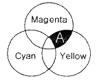
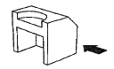
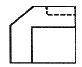
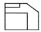
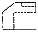
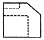
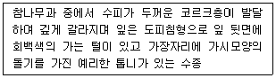
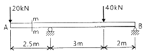
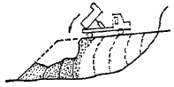
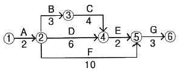

조경산업기사 (2012-05-20 기출문제)
1과목: 조경계획 및 설계
1. 색료혼합에서 다음 A 부분에 해당되는 혼합결과 색명은?

- Blue
- Green
- Red
- Black
(정답률: 80%)

2. 다음 물체를 화살표 방향에서 볼 때 제3각법에 의한 정면도 표현이 옳은 것은?





(정답률: 87%)
3. 축척 1/2500, 1/25000 지형도의 주곡선 간격은 각각 몇 m인가?
- 1m, 2m
- 2m, 10m
- 5m, 20m
- 10m, 10m
(정답률: 84%)
4. 한국의 전통 오방정색의 방위와 색을 짝지은 것 중 틀린 것은?
- 동 - 백색
- 남 - 적색
- 중앙 - 황색
- 북 - 흑색
(정답률: 83%)
5. 르 꼬르뷰지에(Le Corbusier)가 신장 183cm인 인간의 바닥에서 배꼽까지의 높이 113cm 를 기본으로 하여 만든 디자인용 인간척도(人間尺度)를 무엇이라고 하는가?
- 모듈러(Le Modular)
- 피보나치수열
- 황금율(黃金律)
- 이척(裏尺)
(정답률: 77%)
6. 경관에 있어서 형태, 선, 색채, 질감 등에 영향을 미치는 6가지 기본원칙 즉, 대조(contrast), 연속(sequence), 축(axls), 집중(convergence), 대등(codominance), 조형(enframement)을 무엇이라 하는 가?
- 조화의 원칙
- 변화 및 리듬(rhythm)의 원칙
- 강조(强調)의 원칙
- 우세(優勢)의 원칙
(정답률: 71%)
7. 조선시대 별서정원 양식의 발생에 가장 큰 영향을 미친 것은?
- 풍수도참설
- 유교사상
- 신선사상
- 불교사상
(정답률: 78%)
8. 1893년 시카고의 헐 하우스(Hull House)에 최초로 놀이터를 설치한 사람은?
- 하버드(Hubbard)
- 윌리엄 켄트(William Kent)
- 제인 애덤즈(Jane Addams)
- 앤드류 잭슨 다우닝(Andrew Jackson Downing)
(정답률: 57%)
9. 동양식 정원을 구성하는 수법 중 가장 관계가 먼 것은?
- 비정형식 조경
- 축경식 조경
- 정형식 조경
- 산수식 조경
(정답률: 71%)
10. 경복궁 궐내의 북쪽에 위치하며 건청궁(乾淸宮) 남쪽에 인접한 방향 원지는?
- 향원지
- 반도지
- 부용지
- 춘당지
(정답률: 85%)
11. 사상 최초로 공원녹지체계에 대한 계획개념을 제시하고 미국 보스턴시의 공원체계를 수립한 사람은?
- C. Tunnard 와 H.W.S. Cleveland
- Frederick Law olmsted 와 Charles T. Eliot
- George E. Kessler 와 C. Tunnard
- H.W.S. Cleveland 와 George E. Kessler
(정답률: 83%)
12. 중국 정원미에 있어서 가장 강조 된다고 볼 수 있는 것은?
- 조화
- 고산수
- 대칭
- 대비
(정답률: 78%)
13. 다음 중국정원 중 가장 오래된 것은?
- 상림원(上林苑)
- 서원(西苑)
- 졸정원(拙政園)
- 이화원(頣和園)
(정답률: 87%)
14. 일본의 고산수(枯山水)수법을 바르게 설명한 것은?
- 암석과 물을 사용하여 산과 바다를 표현했다.
- 아스카(飛鳥)시대부터 발전된 정원수법이다.
- 대선원 서원과 용안사 석정은 평정고산수수법에 의해 만들어졌다.
- 사상적으로 정토사상과 신선사상을 배경으로 하고 있다.
(정답률: 68%)
15. 시야의 거리감은 추측으로만 판단되고 경계(境界)의식이 뚜렷하지 않는 펼쳐진 경관은?
- 지형(feature)경관
- 전(panoramic)경관
- 관개(canopied)경관
- 초점(focal)경관
(정답률: 86%)
16. 국토의 계획 및 이용에 관한 법률 및 시행령에 따라 지구 단위계획구역으로 지정할 수있는 지역이 아닌 것은?
- 주택법에 따른 대지조성사업지구
- 관광진흥법에 따라 지정된 관광특구
- 택지개발촉진법에 따라 지정된 택지개발지구
- 국토의 계획 및 이용에 관한 법률에 따라 지정된 도시자연공원구역
(정답률: 69%)
17. 다음 자연환경보전에 대한 설명 중 틀린 것은?
- 야생동 ㆍ 식물보호법에 의한 멸종위기야생동 ㆍ 식물의 주된 서식지 ㆍ 도래지 및 주요 생태축 또는 주요 생태통로가 되는 지역은 생태ㆍ자연도 1등급 권역으로 설정된다.
- 지방자치단체의 장은 다른 법률에 의하여 공원 ㆍ관광단지 ㆍ 자연휴양림 등으로 지정되지 아니한 지역중에서 생태적 ㆍ 경관적 가치 등이 높고 자연탐방 ㆍ 생태교육 등을 위하여 활용하기에 적합한 장소를 자연휴식지로 지정할 수 있다.
- 국가 또는 지방자치단체는 개발사업 등을 시행하거나 인 ㆍ 허가 등을 함에 있어서 야생동 ㆍ 식물의 이동 및 생태적 연속성이 단절되지 아니하도록 생태통로 설치 등의 필요한 조치를 할 수 있다.
- 환경부장관은 자연환경을 체계적으로 보전하고 자연자산을 관리 ㆍ 활용하기 위하여 자연환경 또는 생태계에 미치는 영향이 현저하거나 생물다양성의 감소를 초래하는 사업을 하는 사업자에 대하여 생태계보전협력금을 부과 ㆍ 징수한다.
(정답률: 54%)
18. 보행자도로와 차도를 동일한 공간에 설치하고 보행자의 안전성을 향상하는 동시에 주거환경을 개선하기 위하여 차량통행을 억제하는 여러 가지 기법을 도입하는 방식은?
- 보차혼용방식
- 보차병행방식
- 보차공존방식
- 보차분리방식
(정답률: 74%)
19. 경관 가치평가 방법의 설명 중 틀린 것은?
- Leopold는 하천을 낀 계곡을 경관가치 평가하였다.
- Leopold는 12개의 대상지역을 선정하고 그 경관을 계량화하였다.
- Leopold는 46가지의 관련인자를 고려하여 특이성을 상대적 척도로 나타내었다.
- 대상지역 수를 역수로 취하는 특이성비는 그 값이 클수록 좋은 경관을 나타낸다.
(정답률: 78%)
20. 레크레이션 계획으로서의 조경계획의 접근방법 중 어느 지역사회의 경제적 기반이나 예산규모가 레크레이션의 총량 ㆍ 유형 ㆍ 입지를 결정하는 방법은?
- 자원접근방법
- 활동접근방법
- 경제접근방법
- 행태접근방법
(정답률: 86%)
2과목: 조경식재
21. 다음 중 조경수목의 식재시 규격표시 방법이 다른 것은? (단, 건설공사표준품셈을 적용한다.)
- Chaenomeles sinensis
- Chionanthus retusus
- Prunus yedoensis
- Zelkova serrata
(정답률: 47%)
22. 다음 식물 중 잎의 형태가 복엽이 아닌 종은?
- Maackia amurensis
- Sophora japonica
- Cercis chinensis
- Robinia pseudoacacia
(정답률: 50%)
23. 실내의 내음성 식물이 빛의 광도가 너무 강하였을 때의 현상은?
- 잎이 황색으로 변한다.
- 점차적으로 잎이 떨어진다.
- 잎의 두께가 얇아지고 줄기가 가늘어진다.
- 잎이 마르고 희게 되며 나중에는 죽게 된다.
(정답률: 64%)
24. 생태적 천이의 순서가 올바르게 연결된 것은?
- 나지 → 1년생초본 → 다년생초본 → 음수교목 → 양수교목 → 초지
- 1년생초본 → 다년생초본 → 관목림기 → 양수교목 → 나지
- 나지 → 1년생초본 → 다년생초본 → 관목림기 → 양수교목 → 음수교목
- 나지 → 다년생초본 → 1년생초본 → 관목림기 → 양수교목 → 음수교목
(정답률: 78%)
25. 가로수의 크기가 수고 5m, 수관직경 4m인 낙엽교목을 식재하고자 한다. 진행자의 시선 좌우 범위가 30° 정도일때 가로수로 측방 차단 효과를 얻기 위해서는 식재간격을 얼마 이하로 하면 되겠는가?
- 12m
- 10m
- 8m
- 6m
(정답률: 64%)
26. 수목식재가 경관상 매우 중요한 위치일 때의 지주목 설치 유형은?
- 단각형
- 매몰형
- 삼발이형
- 이각형
(정답률: 86%)
27. 식재상(植栽上) 가장 이상적인 지하수위(地下水位)는 얼마인가? (단, 주로 토양단면의 상태를 조사할 경우)
- 0.5m 이하
- 0.5~1.0m
- 1.0~1.5m
- 2.0m 이상
(정답률: 74%)
28. 다음 녹음수가 갖추어야 할 조건 중 부적합한 것은?
- 수관(crown)이 커야 한다.
- 지하고(枝下高)가 낮아야 한다.
- 여름에는 짙은 그늘을 주고 겨울에는 낙엽 지어 햇 빛을 가리지 않아야 한다.
- 나무 주위를 밟아 다져져도 생육에 별 지장이 없는 수종이라야 한다.
(정답률: 81%)
29. 녹나무과 식물 중 낙엽성인 식물은 무엇인가?
- 녹나무
- 후박나무
- 센달나무
- 생강나무
(정답률: 69%)
30. 비탈면의 안정을 위해 잔디의 떼심기를 할 때 그 내용이 잘못된 것은?
- 잔디생육에 적합한 토양의 비탈면경사가 1:1보다 완만할 때에는 비탈면을 일시에 녹화하기 위해서 흙이 붙어 있는 재배된 잔디를 사용하여 붙인다.
- 비탈면 줄떼다지기는 잔디폭이 10cm 이상 되도록하고, 비탈면에 10cm 이내 간격으로 수평골을 파서 수평으로 심고 다짐을 철저히 한다.
- 비탈면 전면(평떼)붙이기는 줄눈에 십자줄이 형성되도록 틈새를 만들어 붙이며, 잔디 소요면적은 비탈면 면적보다 조금 적게 적용한다.
- 잔디 1매당 적어도 2개의 떼꽂이로 잔디가 움직이지 않도록 고정한다.
(정답률: 70%)
31. 공간형성의 가장 기본적 요소인 바닥면(groundplane), 수직면(vertical plane), 관개면(overhead plane)을 식물재료를 이용하며 공간을 한정시키는 방법은?
- 위요(enclosure)
- 틀형성(enframement)
- 축(axis)
- 연속성(sequence)
(정답률: 77%)
32. 다음 중 능수버들에 대한 설명이 아닌 것은?
- 가지가 밑으로 처져 시선을 끌어 내린다.
- 수위가 높은 습지를 좋아하기 때문에 강변, 냇가, 연못가, 호숫가 등에서 흔히 볼 수 있다.
- 열매는 5월에 익는다.
- 중국이 원산이며 소지는 적갈색이다.
(정답률: 76%)
33. 잎이 나오기 이전에 개화하는 수종으로만 구성되지 않은 것은?
- 자목련, 개나리
- 백목련, 배롱나무
- 박태기나무, 배나무
- 벚나무, 살구나무
(정답률: 60%)
34. 야생동 ㆍ 식물보호법상 멸종위기야생동ㆍ식물 I급에 속하는 식물종은?
- 광릉요강꽃(Cypripedium japonicum)
- 단양쑥부쟁이(Aster altaicus var. uchiyamae)
- 가시연꽃(Euryale ferox)
- 매화마름(Ranunculus kazusensis)
(정답률: 67%)
35. 노박덩굴과에 속하는 수종으로만 짝지어진 것은?
- 참빗살나무, 복자기
- 사철나무, 화살나무
- 긴보리수나무, 팥배나무
- 때죽나무, 아왜나무
(정답률: 72%)
36. 다음 설명에 적합한 수종은?

- Quercus variabilis
- Quercus aliena
- Quercus dentata
- Quercus mongolica
(정답률: 42%)
37. 다음 중 열매를 식용하는 식물이 아닌 종은?
- Morus alba
- Castanea crenata
- Styrax japonicus
- Quercus acutissima
(정답률: 58%)
38. Styrax japonicus는 무슨 수종인가?
- 쪽동백나무
- 미선나무
- 때죽나무
- 좀쪽동백나무
(정답률: 66%)
39. 5장의 작은 잎은 달걀형이며, 끝이 오목하고 가장자리는 밋밋하다. 소시지모양의 열매는 10월에 자갈색으로 익어 흰색 속살을 먹을 수 있는 덩굴성 수종은?
- 으름덩굴
- 능소화
- 인동덩굴
- 등나무
(정답률: 65%)
40. 식물의 식재효과와 이용에 관한 설명으로 옳지 않은 것은?
- 교목은 경관의 프레임을 형성한다.
- 관목은 오픈스페이스에 공간감과 규모감을 준다.
- 지피식물은 지표면의 외관을 향상시키고 토양의 침식을 억제하는 효과가 있다.
- 초화류는 다른 경관요소와 견주어 두드러지지 않아야 한다.
(정답률: 53%)
3과목: 조경시공
41. 유압식 백호우의 특징으로 맞지 않는 것은?
- 이동 또는 운반이 편리하고 좌우 독립주행이 용이하다.
- 동력전달이 유압배관 뿐이므로 구조가 간단하고 정비가 용이하다.
- 조작이 쉽고 싸이클 타임이 빨라서 작업능률이 좋다.
- 굴착 또는 주행시의 충격력을 흡수 하므로 과부하에 대해 불안전하다.
(정답률: 66%)
42. 강재의 열처리 방법으로 옳지 않은 것은?
- 불림
- 단조
- 담금질
- 뜨임질
(정답률: 74%)
43. 잔디지역의 면적 0.7ha, 유출계수 0.25, 강우강도 25mm/hr 일때, 우수유출량은 약 몇 m3/sec 인가?
- 0.0012
- 0.0121
- 0.4380
- 4.3750
(정답률: 45%)
44. 평균함수율 60%인 어떤 목재의 전중량(全重量)이 4150g 이라면 이 목재를 평균함수율 8%까지 건조시켰을 때 건조를 통해 감소된 수분량은 얼마인가?
- 1349g
- 2801g
- 4150g
- 5499g
(정답률: 41%)
45. 건축부문에서 일위대가표를 작성할 때 일위대가표의 계금 단위표준은 어떻게 적용시키는가?
- 0.1원까지는 쓰고 그 이하는 버린다.
- 1원까지는 쓰고 그 미만은 버린다.
- 1원까지 쓰고 소수위 1위에서 사사오입한다.
- 0.1원까지는 쓰고 소수위 2위에서 사사오입한다.
(정답률: 74%)
46. 그림과 같은 내민보에서 20kN과 40kN의 집중하중이 작용한다. 단면 m-m에서의 전단력의 크기는 몇 kN인가?

- 10
- 20
- 30
- 40
(정답률: 60%)
47. 벽높이 1.2m, 길이 6m의 벽돌 담장을 1.0B로 설치할 때 소요되는 벽돌은 몇 매인가? (단, 표준형 시멘트 벽돌로 시공하며, 할증율은 3%를 고려한다.)
- 540매
- 556매
- 1073매
- 11⑤매
(정답률: 58%)
48. 목재의 물리적 성질을 나타내는 인자 중에서 수종이나 변, 심재 부분에 따라 변화하지 않고 거의 일정한 값을 가지는 것은?
- 강도
- 수축률
- 공극율
- 진비중
(정답률: 68%)
49. 콘크리트 타설 시 주의사항으로 옳지 않은 것은?
- 콘크리트의 낙하거리는 1m 이하로 한다.
- 타설 시 콘크리트가 매입철근에 충격을 주지 않도록 주의한다.
- 운반거리가 가까운 곳에서부터 타설을 시작하여 먼곳으로 진행해 나간다.
- 콘크리트의 재료분리를 방지하기 위하여 횡류(橫流), 즉 옆에서 흘려 넣지 않도록 한다.
(정답률: 79%)
50. 투명성, 기계적 강도, 내수성은 좋지만 내충격성이 약하며, 발포제를 사용하여 넓은 판으로 만들어 단열재로서 널리 사용되며, 장식품과 일용품으로도 성형하여 사용되는 열가소성 수지는?
- 요소수지
- 실리콘수지
- 염화비닐수지
- 폴리스티렌수지
(정답률: 49%)
51. 석재의 성인(成因)에 의한 분류 중 대리석은 어디에 해당되는가?
- 화성암
- 변성암
- 수성암
- 퇴적암
(정답률: 72%)
52. 흙의 성토작업에서 아래 그림과 같은 쌓기 방법은?

- 물다짐 공법
- 비계층 쌓기
- 수평층 쌓기
- 전방층 쌓기
(정답률: 76%)
53. 할증률에 대한 설명으로 옳은 것은?
- 잔디의 할증률은 5%이다.
- 조경수목의 할증률은 8%이다.
- 시멘트의 할증률은 정치식 일 때는 2%이다.
- 품셈의 각 항목에 할증률이 포함 또는 표시되어 있는 것도 할증을 재적용 한다.
(정답률: 60%)
54. CPM(critical path method)에 관한 설명 중 옳지 않은 것은?
- 3점 시간 추정
- 공비절감이 주목적
- 요소작업 중심의 일정계산
- 반복사업, 경험이 있는 사업 등에 사용
(정답률: 69%)
55. 다음의 네트워크 공정표에서 주공정선(CP)과 공사기간이 바르게 표기된 것은?

- CP(A→B→C→E→G), 공사기간 15일
- CP(A→B→C→E→G), 공사기간 14일
- CP(A→D→E→G), 공사기간 14일
- CP(A→F→G), 공사기간 15일
(정답률: 74%)
56. 덤프트럭의 1회 사이클 시간(Cm)을 결정할 때 포함되는 시간이 아닌 것은?
- 적재시간
- 적하시간
- 교통정체시간
- 적재함 덮개 설치 및 해체시간
(정답률: 72%)
57. 다음 중 알루미늄의 특성으로 옳지 않은 것은?
- 내화성이 부족하다.
- 알칼리나 해수에 침식되기 쉽다.
- 순도가 높을수록 내식성이 좋지 않다.
- 콘크리트에 접하거나 흙 중에 매몰된 경우에 부식되기 쉽다.
(정답률: 56%)
58. 옹벽 등 구조물의 뒤채움 재료에 대한 조건으로 틀린 것은?
- 다짐이 양호해야 한다.
- 압축성이 좋아야 한다.
- 투수성이 있어야 한다.
- 물의 침입에 의한 강도 저하가 적어야 한다.
(정답률: 55%)
59. 배수에 대한 설명으로 옳지 않은 것은?
- 심토층 배수는 토양의 습윤의 조절과 제거를 위한 것이다.
- 어골형 배치는 경기장과 같은 평탄한 지역에 가장 적합하다.
- 차단배수는 평탄한 지역에 높은 지하수위를 가진 곳에 적용된다.
- 배수가 효율적으로 이루어지기 위해서는 토양이나 포장재의 다공성이 결정한다.
(정답률: 61%)
60. 토공사용 기계로서 흙을 깎으면서 동시에 기체내에 담아 운반하고 깔기작업을 겸할 수 있으며, 작업거리는 100 ~ 1500m 정도의 중장거리용으로 쓰이는 것은?
- 트렌처
- 그레이더
- 파워쇼벨
- 캐리올 스크레이퍼
(정답률: 72%)
4과목: 조경관리
61. 다음 중 곤충의 변태조절호르몬을 분비하는 것은?
- 지방체
- 편도세포
- 알라타체
- 죤스톤기관
(정답률: 58%)
62. 다양한 표지판의 유형 중 안내표지에 대한 설명으로 가장 적합한 것은?
- 효율적인 관광을 유도하고 교육적인 효과를 강조한다.
- 통행상 일정행위의 금지 또는 제한을 전달하여 도로사용상의 규칙을 주지시킨다.
- 탐방이 주가되는 대상지에 대한 관광, 이용시설 및 이용방법에 대하여 안내한다.
- 문자나 기호를 디자인하여 표지판이 위치한 장소의 지명과 대상지 등을 표시한다.
(정답률: 66%)
63. 호두나무가 분비하는 저글란(juglonc)의 작용은?
- 보습작용
- 정균작용
- 제초작용
- 생육촉진작용
(정답률: 62%)
64. 조경 관리계획의 수립절차 순서로 가장 옳은 것은?
- 관리목표 결정→관리계획 수립→관리조직 구성
- 관리계획 수립→관리목표 결정→관리조직 구성
- 관리조직 구성→관리목표 결정→관리계획 수립
- 관리목표 결정→관리조직 구정→관리계획 수립
(정답률: 62%)
65. 다음은 멀칭(mulching)의 효과에 관한 설명이다. 가장 거리가 먼 것은?
- 토양침식 방지
- 토양 비옥도 증진
- 태양열 복사 감소
- 잡초발생 조장
(정답률: 82%)
66. 근린공원의 잔디 제초에 소요되는 작업단가는 m2당 250원이 소요된다. 잔디 제초 작업률이 0.5, 작업회수가 년 2회라고 한다면, 3000m2 규모의 잔디 제초에 소요되는 연간 관리비는?
- 35만원
- 75만원
- 150만원
- 300만원
(정답률: 60%)
67. 보르도액의 주성분은?
- 크롬
- 구리
- 비소
- 붕소
(정답률: 63%)
68. 병원균 중에서 병자각(柄子殼) 및 병포자(柄胞子)를 형성하는 것은?
- 향나무 녹병균
- 밤나무 흰가루병
- 소나무 잎떨림병균
- 오리나무 갈색무늬병균
(정답률: 59%)
69. Agrobacterium tumefaciens가 일으키는 증상은?
- 혹
- 궤양
- 시들음
- 붉은별무늬
(정답률: 54%)
70. 비탈면호공에 대한 설명으로 옳은 것은?
- 종자뿜어붙이기공, 식생판공, 떼붙임공은 식생공의 공종이다.
- 긴 비탈면 전체가 지하수작용에 의해 움직이는 것을 절토면의 붕괴라고 한다.
- 비탈면 식생공은 비료가 포함되어 있으므로 추가 시비가 필요없다.
- 비탈면 식생은 어깨부보다 하단부의 상태가 나쁘므로 중점관리해야 한다.
(정답률: 62%)
71. 다음 중 네슬러(Nessler)시약으로 검출할 수 있는 비료의 성분은?
- NO3-
- K+
- H2PO4-
- NH4+
(정답률: 67%)
72. 난지형 잔디의 알맞은 생육적 온도는?
- 5~10℃
- 10~15℃
- 20~25℃
- 25~35℃
(정답률: 70%)
73. 수간(樹幹)감기는 큰 나무 이식시에 해주어야 하는 데 그 효과로 적당하지 않은 것은?
- 이식시 수간의 보호와 상처를 예방한다.
- 줄기가 강한 햇볕에 타는 것을 막아준다.
- 상해(霜害)나 병해충 방지를 해준다.
- 줄기로부터 새가지가 나오도록 해준다.
(정답률: 78%)
74. 무기양분의 재이동은 사부(篩部)를 통하여 나온 후 도관(導管)으로 옮겨가 다른 기관으로 운반되는데 이동성이 가장 큰 원소는?
- S
- Ca
- K
- P
(정답률: 46%)
75. 포스팜 50% 액제 50cc 를 포스팜 농도 0.5%로 희석하려고 할 경우 요구되는 물의 양은? (단, 원액의 비중은 1 이다.)
- 6000cc
- 5500cc
- 4950cc
- 4500cc
(정답률: 64%)
76. 측구, 맹암거 등을 활용하여 시공하는 도로 보수공법은?
- 급수처리공법
- 표면유수처리공법
- 배수처리공법
- 노면치환공법
(정답률: 91%)
77. Monostichella coryli 병원균에 의해 묘목뿐만 아니라 성목에도 흔히 발생되는 수목병은?
- 삼나무 붉은마름병
- 은행나무 잎마름병
- 개암나무 탄저병
- 자작나무 갈색점무늬병
(정답률: 58%)
78. 주요한 토양생성 작용에는 다음과 같은 것들이 있다. 이 중 저습지 또는 배수가 불량한 곳에서 주로 나타나는 것은?
- 라테라이트화 작용(laterization)
- 글라이화 작용(gleization)
- 포드졸화 작용(podzolzation)
- 석회화 작용(calcification)
(정답률: 66%)
79. 다음 중 수목의 관수 방법이 아닌 것은?
- 침수식 관수법
- 도랑식 관수법
- 방사상식 관수법
- 스프링클러식(Springkler) 관수법
(정답률: 51%)
80. 옥외 레크레이션 관리체계가 아닌 것은?
- 식생관리(Vegetation management)
- 이용자관리(Vistor management)
- 자원관리(Resource management)
- 서비스관리(Service management)
(정답률: 59%)